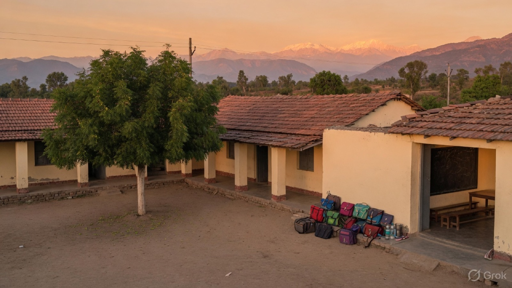
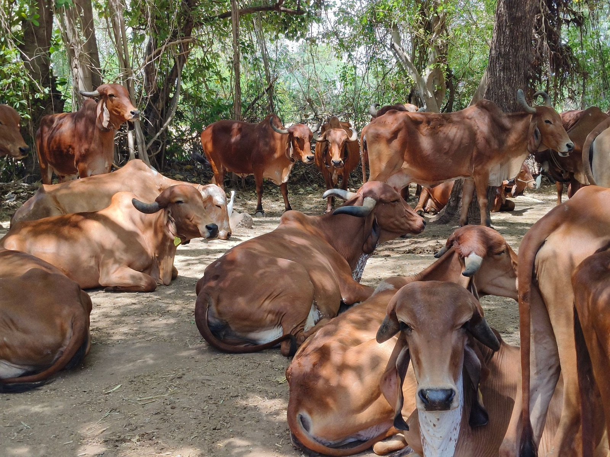
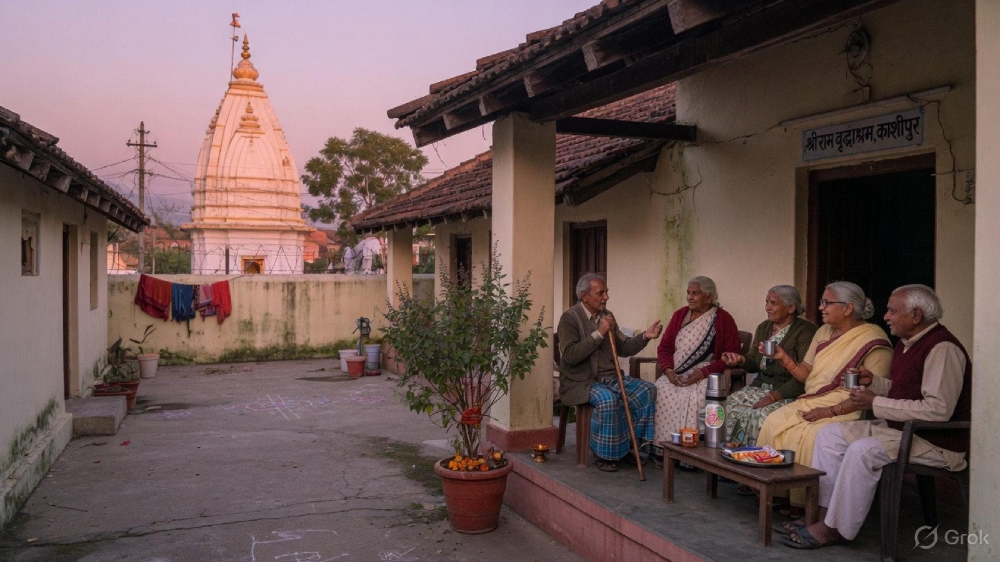
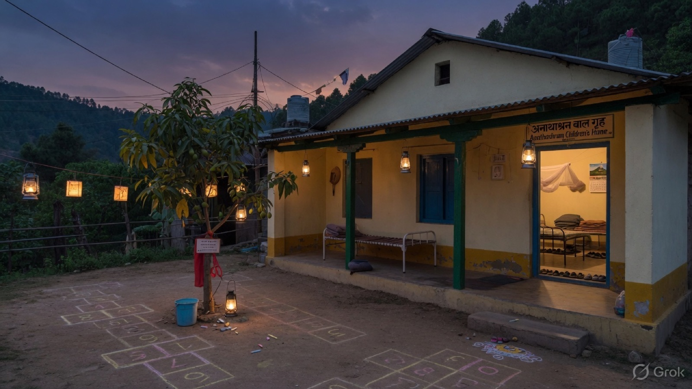
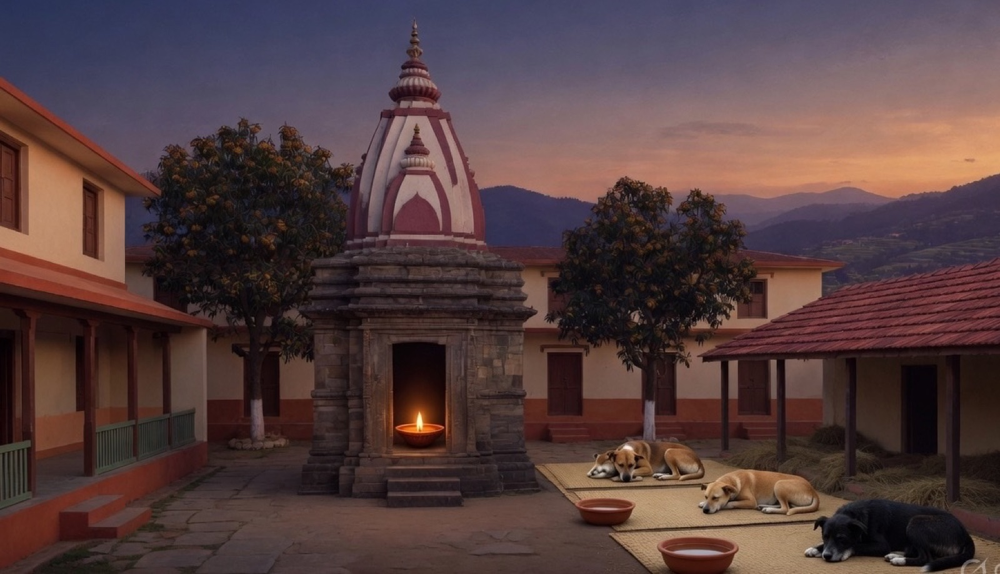
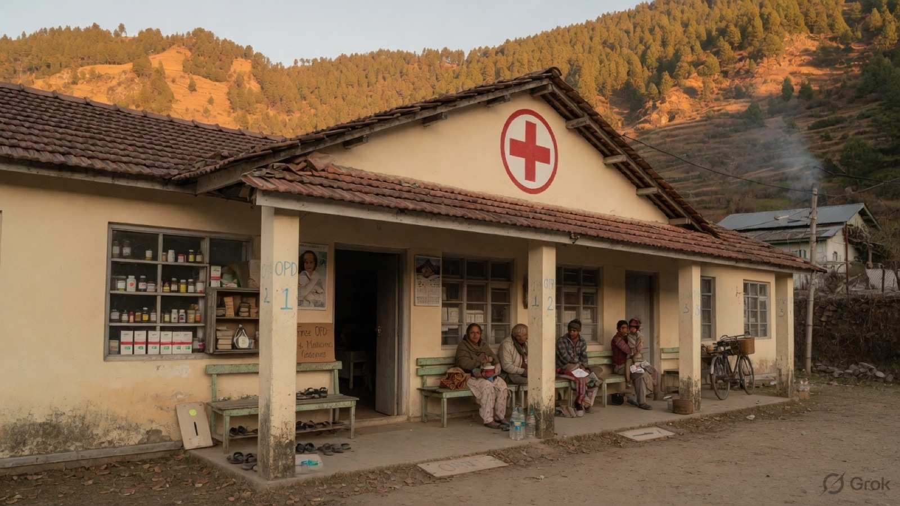

परियोजनाएँ · हम जो परिसर खड़ा कर रहे हैं
पाँच सेवा-गृह, एक संस्था।
क्लिनिक पहली चालू इकाई है। अब संस्था भूमि, धन और सहयोग जुटा रही है — ताकि काशीपुर में बच्चे, वृद्ध, गौ और आवारा पशु सबको सम्मानजनक स्थान मिले।

प्रस्तावित
विद्या मंदिर
विद्यालय
आर्थिक रूप से कमज़ोर परिवारों के बच्चों के लिए कम शुल्क / प्रायोजित विद्यालय — ज्ञापन के अनुसार पुस्तकें, भोजन और ट्यूशन सहायता।
- पहले प्राथमिक और माध्यमिक कक्षाएँ
- छात्रवृत्ति और सामग्री अभियान
- पहली पीढ़ी के विद्यार्थियों के लिए ट्यूशन

प्रस्तावित
गौशाला
गौ आश्रय
परित्यक्त, घायल और वृद्ध पशुओं की गौशाला — चारा, छाया, पशु चिकित्सा और सम्मानजनक जीवन।
- घायल पशुओं का बचाव और उपचार
- चारा भंडार और स्वच्छ पानी
- स्थानीय परिवारों के लिए सेवा दिवस

प्रस्तावित
वृद्धाश्रम
वृद्ध आश्रम
परिवार-विहीन वृद्धों का आवासीय घर — भोजन, नर्स की देखरेख, प्रार्थना स्थल और संगति; बंद वार्ड नहीं।
- गरिमा और एकांत के साथ कमरे
- दैनिक भोजन, दवा और क्लिनिक से जुड़ाव
- त्योहारों पर पड़ोस के लिए खुला

प्रस्तावित
अनाथाश्रम
बाल गृह
अनाथ और असहाय बच्चों का पारिवारिक घर — विद्यालय, भोजन, परामर्श और कौशल या उच्च शिक्षा का मार्ग।
- गृह-अभिभावकों के साथ सुरक्षित आवास
- संस्था के विद्यालय और क्लिनिक से जुड़ा
- ज्ञापन के अनुसार कानूनी सहायता

प्रस्तावित
पशु सेवा केनेल
पशु आश्रय
आवारा और परित्यक्त कुत्तों के लिए केनेल और प्राथमिक उपचार — नसबंदी शिविर, टीकाकरण, गोद लेना; पाउंड नहीं।
- स्थानीय पशु चिकित्सकों के साथ शिविर
- काशीपुर परिवारों के लिए गोद लेने की सेवा
- घायल पशुओं का आपात बचाव

अभी खुला
धन्वंतरी क्लिनिक
चैरिटेबल ओपीडी
दीर्घ रोगों के लिए इलेक्ट्रो-होम्योपैथिक सेवा। यही परिसर का बीज है — पहला द्वार जहाँ लोग पहले से आते हैं।
- मंगलवार निःशुल्क परामर्श और उपचार
- शिवाल्य पुर, डल्लू कुंडेश्वरी
- बाद में विद्यालय, वृद्ध और आश्रम निवासियों की सेवा